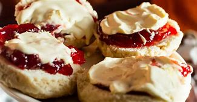

Ingredients
- 1 cup self-raising flour, sifted
- 1/8 cup caster sugar
- 1/4 cup thickened cream
- 1/4 cup lemonade
- a pinch of salt
- ½ tb milk
- extra flour (to knead on bench)
Method
- Preheat the oven to 200°C. Line a flat baking tray with baking paper.
- Sift the 1 cup of flour into a large bowl, add sugar and salt.
- Add the cream and lemonade and mix with a butter knife to form a soft dough.
- Place the dough onto a clean and lightly floured workbench. Knead gently until combined.
- Press the dough with your hands to a thickness of approx 2cm.
- Use a cookie cutter of your choice, to cut scones. Keep re-rolling the dough if needed, so you can use up as much dough as possible.
- Place scones close together on the baking tray.
- Lightly brush the tops with milk using a pastry brush.
- Bake for approx 10-15 minutes or until very lightly browned and cooked in the centre.
- Serve with toppings of your choice - for example, jam, butter or whipped cream.
Finished product

Video tutorial